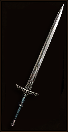
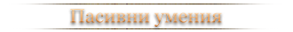

Уменията са легендарни сили, които определят героите: те могат да причиняват унищожение на цял терен, вълни от огън и страховити заклинания, които отекват на бойното поле, докато анихилирате армии от демони.
Всеки клас си има своите уникални умения, които са специално подбрани за талантите които има. Например, Варваринът притежава Whirlwind умение и по този начин може да атакува всички врагове около него едновременно. Идеално умение за големи групи.
{kind=link}
Някои умения са защитни, а други са с цел да ни предоставят бонус на нас или на цялата група в играта. Повече преобладаващи умения са атакуващи и имат за цел бързото анихилиране на враговете ви.
Повечето умения, които изпозлвате, ще изискват дадено количество ресурс (той е различен за всеки клас) това е определено количество сила, която подобно на живота Ви се изчерпва и регенерира. Тя се изчерпва главно от използването на много силни умения. Може да следите състоянието на вашият ресурс постоянно, той се намира от дясната страна на вашият екран.
Всеки клас ползва свой уникален ресурс. Повече за тях може да намерите на страниците за всеки клас.
Fury (Barbarian), Wrath (Crusader), Hatred/Discipline (Demon Hunter), Spirit (Monk), Essence (Necromancer), Mana (Witch Doctor) и Arcane Power (Wizard).
За да може да ползвате пълният потенциал на вашите умения ще трябва да ги поставите на вашият екшън бар. За съответните платформи до менюто с умения се стига по следният начин: За PC може да отворите със стандарният бутон "S”; а за конзолите трябва да отворите менюто на персонажа (Xbox 360 и Xbox One: BACK; PlayStation®3 и PlayStation®4: SELECT) и след това да си избирате от панела с умения. В зависимост от платформата на която играете, уменията ще се подреждат автоматично на вашата клавиатура и мишка или контролер (геймпад).
Може да използвате всяко едно умение, стига да го поставите на лентата за действие. След като си изберете скил може да го натиснете с бутон от клавиатурата или мишката зависи, къде е поставен и да селектирате цел.
 Когато използвате многократно едно умение за нанасяне на поражения върху една цел, ще забележите, че не винаги правите еднаква щета. Всеки път когато използвате атакуващо умение, на случаен принцип се избира щетата, която ще причините от Damage range на вашето оръжие, а то се модифицира и увеличава от вашето умение, което изпозлвате. Например ако вашето оръжие прави щети в интервал от 1–10 и използвате умение, което увеличава с 200% weapon damage, то вие ще нанасяте поражениея в интервал 2–20 щета.
{kind=link}
Attacks per Second (АS - атака на секунда) е стойност за всяко оръжие и показва колко бързо може да атакувате с него. Много от вашите умения ще се активират по-бързо ако използвате ками, понеже той има много бърза атака. По-бавните оръжия като двуръки брадви имат по-голям обсег на поражения.
Weapon’s Damage per Second e стойност, която Ви показва потенциалът, който може да стигне дадено оръжие, когато се вземе под внимание скоростта на атака и щетите, които причинявате. Експериментирайте с различни оръжия и умения докато не откриете вашият боен стил.
Видове поражения
Всяко умение си има свой елемент и с руните той може да се промени изцяло. Когато изберете умение, ще може да видите какво поражение нанася и от кой елемент се възползва то. Ако запазите това умение и използвате предмети, които увеличават даденият елемент демидж, то умението Ви ще бъде усилено. В повечето случаи точно предметите, които намирате, ще определят какъв елемент да използвате за вашите умения за борбата Ви срещу легионите демони от Burning Hells.- Физически (Physical): Доста умения притежават точно физическа атака, която може да се променя с течение на времето. Колкото по-силни ставате и отключвате руните към дадените умения, ще може да добавяте допълнителни ефекти към тях и също така да сменяте елементът, който нанася пораженията. Например: Варваринът разполага с Bash или Ловецът на Демони с Impale, които са класифицирани като Физически елемент (Physical) при нанасянето на поражения. Също така има умения и руни, които не нанасят поражения (най-добър пример е един от законите на Кръстоносеца - "Laws of Justice" и неговите вариации), който също е класифициран като Физически елемент (Physical), но е много важно да се отбележи, че техните ефекти (бонуси, които дават) няма да се увеличат ако носите повече % Физически щети по екипировката Ви.
- Огнени (Fire): Уменията, които нанасят своите поражения с огнен елемент изискват много ресурс. Те притежават голям радиус на поражение, причиняват поражение през повечето време, докато целта е жива (тоест имат DoT).
- Ледени (Cold): уменията, които ползват леден елемент най-често забавят или замразяват целите си; други уменият от този тип причиняват по-голяма уязвимост върху целта и позволяват тя да поеме повече щети. Най-често това се получава когато целта е chilled (забавена) или замразена.
- Светкавици (Мълниеносен елемент - Lightning): Някои от мълниеносните поражения зашеметяват целите, увеличават броя цели, които може да поразите или намаляват изискването за ресурс и времето за презареждане на умението с цел да сте по-ефективни в битка.
- Отрова (Poison): Пораженията нанесени с отрова имат за цел да отслабят противника, като намалят неговата ефективност в битките и му нанасят и DoТ ефект. Много от атакуващите скиловете на Знахаря ползват такъв елемент.
- Arcane (Тайнствени/Магически): Това са умения, които използват много силна магия и чрез природните бедствия (стихии) премазват противниците, които се изпречат на пътя им. Няколко такива умения има Магьосникът.
- Сакрален (Holy): Един от най-силните елементи за причиняване на поражения е Сакралния елемент. Той се ползва от Кръстоносците и Монасите, като те могат както да ползват Сакрален елемент за поражения, така и за защита и бонуси.
С всяко убито чудовище и изпълнена задача, ще трупате опит, който ще се отразява в подобряване на вашите сили. С придобиване на достатъчно количество опит, Вие ще вдигате нива (за пример започвате ниво 1 и след определено придобито количество опит, ще станете ниво 2) това се казва "вдигане на ниво". Скоро ще научавате освен новите нива и нови умения, които ще с достъпни от панелът за умения и ще може да си избирате тези умения, които Ви харесват.
С вдигането на определени нива, ще отключвате допълнително място за вашите умения, но не повече от 6, с които да се борите с ордите чудовища. Нови полета за допълнителни умения се отключват при следните нива: 2, 4, 9, 14, и 19.
Парагон нива
Веднъж, след като достигнете прага на нивата в Diablo III, ще спрете да трупате опит за нива и няма да отключвате повече умения, но ще започнете да трупате нов опит и чрез него ще научавате нови нива, които ще помогнат с много бонуси за борбата с легионите демони.Парагон нивата могат да бъдат започнати единствено след като сте достигнали максималният праг на "обикновенните" нива. Те си приличат по няколко неща. След всеки научен Парагон, ще получавате по 1 парагон точка, която може да използвате в различните парагон графи (парагон графите са 4 и всяка от тях предоставя различен бонус), които ще Ви предоставят различен бонус. Също така, при научаването на Парагон, ще получавате и стандартните точки кръв, сила, ловкос и интелект.
Няколко от основните разлики: Парагон нивата нямат праг на ниво, а са безкрайни и всяка точка може да се използва за една от 4-те графи и да Ви донесе солиден бонус (като увеличаване на вашите атакуващи или защитни способности, бързина, да увеличите вашият ресурс и още доста неща). Бонусите, които отключвате с тези нива нямат изискване за предмети, герой или стандартното ниво. Вашите Парагон нива са споделени за всички ваши герои. Те са разделени само за режимите на игра Софткор, Харкор, Софткор-Сезон, Хардкор-Сезон. Това означава, че ако имате Парагон нива на Софткор и започнете нов герой, той ще има възможността да ползва тези Парагон точки, но ще може да научава Парагон опит едва, когато стигне максимално ниво. Другото отличително нещо на парагоните е че не ги губите в Хардкор режима, когато героят Ви умре или ако си изтриете героите.
На последно място, ще отключвате и парагон портрети, които ще може да избирате, кой от тях да носите и да се показва публично докато сте в парти или в самостоятелна игра. Това е козметична награда и не носи някакви бонуси!

 С достигането на нива 10, 20 и 30 (и 70 ако притежавате Reaper of Souls), вие ще отключвате по един пасивен слот за умение. Пасивните умения не заемат място на вашият бар и не изискват бутон за използване.
Те Ви предоставят бонуси, които може да променяте колкото пъти искате. Например, те могат да Ви помогнат за увеличаването на вашите атаки или защитни умения.
С достигането на нива 10, 20 и 30 (и 70 ако притежавате Reaper of Souls), вие ще отключвате по един пасивен слот за умение. Пасивните умения не заемат място на вашият бар и не изискват бутон за използване.
Те Ви предоставят бонуси, които може да променяте колкото пъти искате. Например, те могат да Ви помогнат за увеличаването на вашите атаки или защитни умения.
С увеличаване на нивата, които трупате, вие ще увеличавате и уменията, с които ще разполагате за избор и те ще бъдат много повече отколкото ще може да изберете.
Промяната на умение не изисква ресурси и може да се направи от менюто за умения: когато сте в него, просто избирате и потвърждавате новото умение. Ако обаче искате да използвате умения, които са в нестандартна конфигурация (например да използвате 4 защитни умения), първо трябва да отворите менюто на играта, да изберете “настройки,” след това “геймплей,” и да дадете отметка на полето “elective mode” Въпреки, че може да сменяте всичките си активни умения навсякъде ако не сте в битка, то при пасивните умения ще имате време за изчкаване ако не сте в града.
Руните са допълните модификатори за увеличаване на вашите умения. Те могат и да ги променят драстично. Започвате да отключвате руни след 6 ниво и веднага след това ще може да модифицирате уменията, за които сте отключили руни. Като пример какво може да променят руните: може да увеличат освен % поражение, които нанасяте, вида на елемента, което ползва умението, разстоянието, може да увеличи целите, визията, може да събира или разпръсква групите.
Лесно може да стигнете до руните, нужно е да отворите менюто за умения и след като изберете дадено умение, то ще Ви покаже и руните, които са за него. Ще може да избирете единствено руните, които сте отключили и също така ще може да се ползва само по една руна на умение. Получавате достъп до всички руни и умения, щом достигнете 70 ниво за даденият герой. Те не са споделени както парагон нивата!
Може да експериментирате с руните и уменията с калкулатора за умения.
При убийство на чудовище, освен стандартните неща, които то може да пусне (злато, предмети, регенериращ глоб) може да пусне и златисти електрически глобове. Те ще Ви предоставят благоприятни бонуси и трябва да побързате да ги вземете, защото с времето изчезват.
{kind=link}
След като вземете даден глоб, отключвате допълнителна сила, която се определя от вашите предмети и статистики. Всеки, който е бил влизо до вас от партито също получава този Nephalem Glory бъф. Nephalem Glory трае 60 секунди. Ако вземете втори такъв глоб то вие отключвате още един бонус.
Взимайки няколко последователни Nephalem Glory бъфа и докато са активни, отключвате всички бонуси, които може да получите от този вид глоб, като максимума активни е 3. При всяко взимане на такъв глоб вие рестартирате времетраенето от 60 секунди. Ако пък вземете глоб за регенерация на жизнените Ви точки, ще удължите Nephalem Glory ефекта с 5 секунди, а на всеки 5 регенериращи глоба автоматично ще се отчитат като Nephalem Glory глоб и ще рестартира 60 секунди време (като отново максимума е 3).
- Nephalem Glory – Level 1 - Докато имате Nephalem Glory, ще нанасяте бонус поражения с всяка атака.
- Nephalem Glory – Level 2 - Ако пък имате два Nephalem Glory, освен, че ще правите бонус поражение на целта, ще нанасяте и поражения на близките врагове до дадената цел. В допълнение получавате и 10% бонус бързина.
- Nephalem Glory – Level 3 - с три нива на Nephalem Glory, освен предните бонуси, които получавате, ще имате шанс и за допълнителни щети за нанасяне по враговете.
Макар да полагате огромни усилия да посечете враговете си, те ще имат също тази възможност. Ако някое чудовище Ви удари, то вашият Живот (намира се от ляво на вашият бар за действие и представлява червено кълбо) ще бъде намален.
{kind=link}
Вашият живот се определя от Vitality атрибут (това включва, пасивни умения, екипировка, парагон точки, активни скилове и бъфове в партито) всичко това определя колко живот ще имате. Може да възстановявате вашият живот, като взимате глобовете с регенерация на живота след като посичате орди от демони, като вдигнете ниво (стандартно или парагон - то запълва до горе живота и ресурса ви), чрез връщане на живот от удър или за секунда (може да ги набавите чрез екипировката, камъни, легендарни камъни и бъфове).
Когато животът Ви мине в критично състояние, екранът ще почервенее и това е ясен знак, че трябва да избягате от битката за да се възстановите.
Глобове за живот
Шансът да Ви падне глоб за регенерация на живота е различен спрямо вида на чудовищата. Самият бар за живот на всяко чудовище има разграфени "триъгълници" и при достигането им се активира процес, при който има шанс да падне регенериращ глоб за вашата кръв.{kind=link}
Нормални чудовища: Шансът за дроп на регенериращ глоб при смърт варира в зависимост от типа чудовище.
Шампиони: При 50% живот и при смърт, шансът за дроп на регенериращ глоб е 60%.
Редки чудовища: При 50% кръв или при смърт, шансът за дроп на ренегериращ глоб е 100%.
Със смъртта в играта не идва краят на вашият герой (освен ако не играете Hardcore). Имате възможност да се съживите на същото място, където сте умряли (освен ако не е било в битка с БОС), имате възможност да се съживите на даден чекпойнт или в града, а също така може и да бъдете съживени от играч, ако играете в група.
Ще се съживите с пълен живот, но ще загубите всички налични бъфове преди смъртта Ви, а също така активните Ви скилове, които сте били активирали и са в процес на изчакване няма да са презаредени. Другото, което също ще се случи, е че екипировката Ви ще бъде повредена с 10% и ще дойде момент, в който ще трябва да я поправите, което от своя страна ще Ви струва пари.